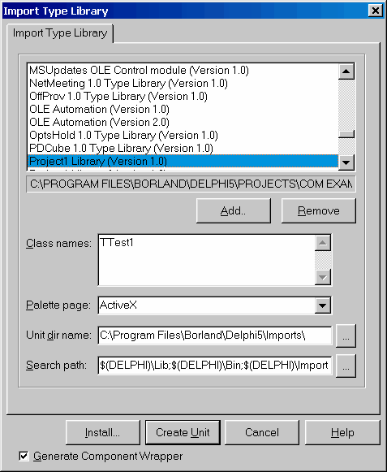
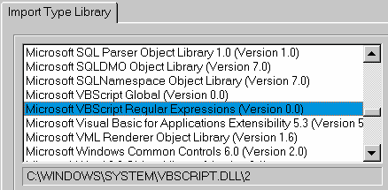

Создание приложения клиента
Перейдем к написанию приложения клиента. Если у нас есть модуль Project_TLB, то оно ничем не будет отличаться от предыдущего примера. Более интересен случай, когда мы имеем только исполнимый файл с сервером. Зарегистрируем этот сервер и выберем в меню Delphi IDE команду Project -> Import Type Library
В открывшемся окне найдем строку с описанием библиотеки типов требуемого сервера:

Если включен флажок Generate Component Wrappers, то в импортированный модуль будет добавлен код для создания компонента Delphi, который можно бросить на форму и он автоматически создаст требуемый COM-сервер и позволит обращаться к его методам. В противном случае будет сгенерирован модуль, содержащий описание всех имеющихся в библиотеке типов интерфейсов.
Далее Вы должны определить, что Вы собираетесь сделать с выбранной библиотекой
Install Создает модуль с описанием интерфейсов и автоматически регистрирует требуемые компоненты в IDE. После этого Вам остается лишь бросить их на форму. Create Unit Создает интерфейсный модуль, но не устанавливает его в IDE. Это удобно, если Вам нужны только описания интерфейсов, либо если Вы хотите вручную установить его в package, отличающуюся от используемой по умолчаниюТаким образом, для распространения и использования сервера не нужно ничего, кроме его исполнимого модуля. Но самое главное даже не это. Гораздо более важно, что Вы можете импортировать и использовать в своей программе любой из имеющихся на компьютере COM-серверов. Естественно, что при передаче своей программы клиенту Вы должны установить на его компьютере соответствующий COM-сервер.

Для примера, используем в своем приложении процессор регулярных выражений VBScript. Импортируем библиотеку типов «Microsoft VBScript Regular Expressions»
При этом будет создан файл VBScript_RegExp_TLB.pas
Создадим форму и добавим следующий код для проверки вхождения текста в Exit1 в текст Edit2:
uses
VBScript_RegExp_TLB;
procedure TForm1.Button1Click(Sender: TObject);
var
RE: IRegExp;
begin
RE := CoRegExp.Create;
RE.Pattern := Edit1.Text;
if RE.Test(Edit2.Text) then
Caption := 'TRUE'
else
Caption := 'FALSE';
end;
Это все! Мы получили в своем приложении поддержку регулярных выражений такую же, которая включена в скриптовые языки Microsoft (VBScript и JScript).